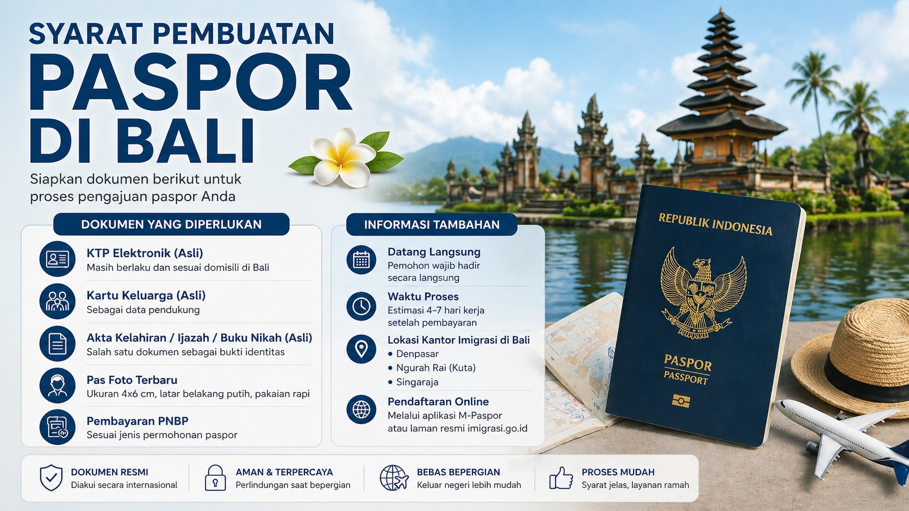

Panduan lengkap mulai dari dokumen, proses pembuatan, hingga tips agar pengurusan paspor lebih cepat dan lancar.

Untuk membuat paspor, Anda perlu menyiapkan dokumen seperti KTP, Kartu Keluarga, serta dokumen pendukung lainnya sesuai kebutuhan.
Proses dimulai dari pendaftaran, verifikasi dokumen, wawancara, hingga pengambilan paspor di kantor imigrasi.
Banyak pemohon mengalami antrean panjang atau kesalahan data yang menyebabkan proses menjadi lebih lama dari yang seharusnya.
Pastikan semua dokumen lengkap dan sesuai, serta memahami alur pengurusan agar tidak perlu mengulang proses dari awal.
Jika Anda ingin proses yang lebih praktis dan tidak membingungkan, Anda bisa menggunakan layanan dari Rizch Service untuk membantu pengurusan paspor dengan lebih cepat dan terarah.
Tidak punya waktu untuk antre atau ingin proses lebih mudah? Konsultasikan kebutuhan Anda sekarang juga.
📲 Konsultasi via WhatsAppWaktu tergantung antrean dan kelengkapan dokumen.
Ya, biasanya diperlukan kehadiran untuk verifikasi dan wawancara.
Data tidak sesuai atau dokumen tidak lengkap.
← Lihat Artikel Lainnya